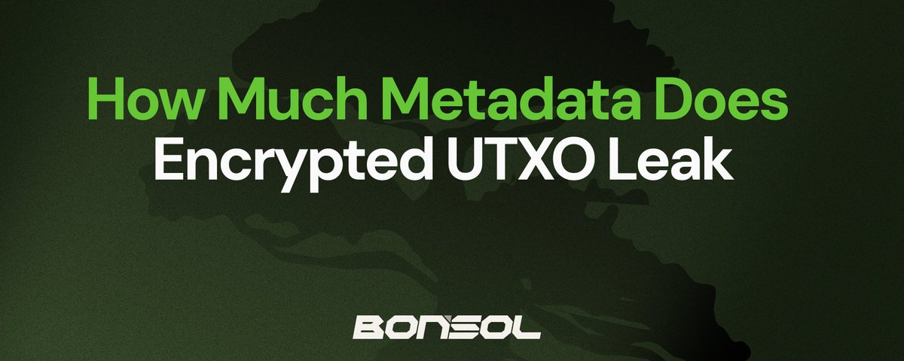
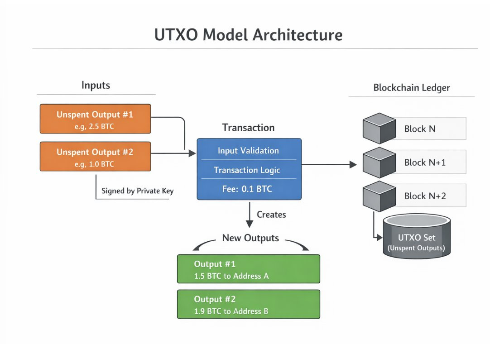
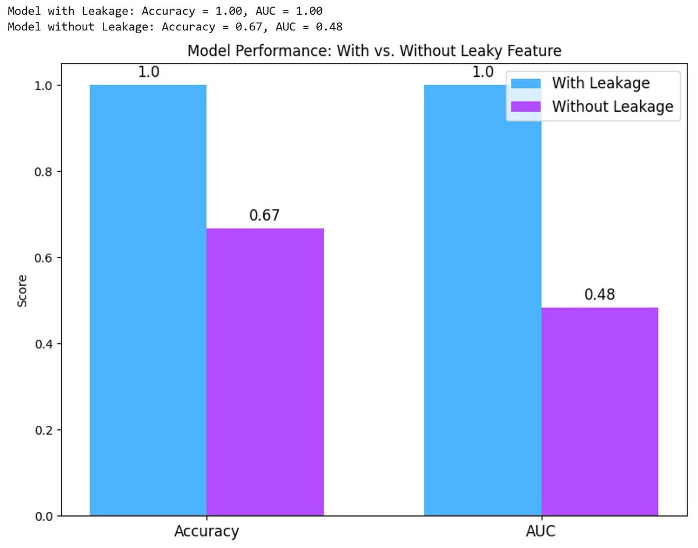

How Much Metadata Does an Encrypted UTXO Leak

Encrypted UTXO systems hide amounts and recipients—but the structure around them can still leak patterns over time.
Encrypted UTXO systems are often presented as the future of blockchain privacy. By hiding transaction amounts, recipients, and balances behind cryptographic commitments and zero-knowledge proofs, these systems promise a level of confidentiality that traditional transparent blockchains cannot provide.
However, encryption alone does not eliminate all information leakage. While the contents of transactions may be hidden, the surrounding structure of those transactions remains visible. This surrounding information is known as metadata. Over time, metadata can accumulate and reveal patterns about users, applications, and financial activity.
Understanding these leaks is critical for evaluating the real privacy guarantees of encrypted UTXO systems. This article explores what metadata is exposed in encrypted UTXO designs, why it matters, how attackers exploit it, and what developers must consider when designing privacy-preserving blockchain protocols.
Understanding the UTXO Model
The UTXO model, short for Unspent Transaction Output, is the accounting system used by Bitcoin and many other blockchains.
Instead of maintaining account balances like traditional banking systems, the blockchain tracks individual pieces of value called outputs. Each output represents a discrete coin that can later be spent as an input in a new transaction.
A simple transaction works as follows:
- A user spends one or more existing outputs.
- The transaction creates new outputs that become spendable later.
- The difference between the inputs and outputs becomes the transaction fee.
In transparent blockchains like Bitcoin, every output contains clear information such as the amount and the conditions required to spend it. This makes the entire transaction graph publicly visible.
Privacy-focused systems modify this model by encrypting the contents of outputs. Instead of publishing the amount directly, the system stores a cryptographic commitment. A commitment is a mathematical structure that hides a value while still allowing proofs about it.
For example, Pedersen commitments allow a user to prove that the sum of inputs equals the sum of outputs without revealing the actual values involved. Zero-knowledge proofs ensure that transactions are valid while keeping amounts and ownership hidden.
This approach significantly improves privacy, but it does not hide everything.

What Metadata Means in Blockchains
Metadata refers to information about a transaction that is not part of the encrypted payload itself. Even if amounts and recipients are hidden, other observable characteristics remain visible to anyone inspecting the blockchain.
Examples include:
- The time a transaction was included in a block
- The number of inputs and outputs
- The size of cryptographic proofs
- Transaction ordering within a block
- Nullifiers used to prevent double-spending
- Fee information
- Transaction frequency patterns
Each of these signals may appear harmless individually. However, when combined and analyzed over time, they can reveal surprisingly detailed information about user behaviour.
Metadata, therefore, becomes the primary surface through which privacy systems can leak information.
Core Sources of Metadata Leakage
Several categories of metadata leakage appear consistently across encrypted UTXO systems.
Timing and Activity Patterns
Every transaction on a blockchain is associated with a specific block and, therefore, a timestamp. Even if the transaction contents are hidden, observers can still monitor when activity occurs.
This allows analysts to identify behavioural patterns.
For example, a wallet that consistently sends transactions every Friday morning reveals a routine. A trading bot may generate bursts of transactions during periods of market volatility. If a user interacts with an exchange at a predictable time, observers may correlate blockchain activity with exchange withdrawal records.
Timing analysis becomes especially powerful when combined with external data sources such as public market movements, exchange maintenance windows, or social media announcements.
Even without direct access to transaction contents, these correlations can narrow down possible identities.
Transaction Graph Structure
Although encrypted outputs hide amounts and recipients, the structural shape of transactions often remains visible.
Observers can see how many inputs a transaction consumes and how many outputs it creates. This information reveals patterns about the type of activity being performed.
For instance:
- A transaction with many inputs and one output often indicates consolidation of small coins into a larger one.
- A transaction with one input and many outputs resembles an exchange payout or batch payment.
- Repeated patterns may reveal automated services or payment processors.
Even without knowing the values involved, these structural fingerprints allow analysts to categorize different types of blockchain activity.
Graph analysis techniques can reconstruct clusters of related transactions based purely on structural similarities.
Nullifier Patterns
Encrypted UTXO systems must prevent users from spending the same output twice. To achieve this, they introduce structures called nullifiers.
A nullifier is a unique cryptographic value derived from a note that becomes public when the note is spent. Once a nullifier appears on the blockchain, that note cannot be spent again.
While nullifiers do not reveal which note was spent, patterns can still emerge.
If nullifiers follow predictable formats or appear in related sequences, observers may infer relationships between transactions. Certain wallet implementations may produce identifiable nullifier patterns, allowing analysts to fingerprint specific software.
Over time, this can allow clustering of transactions originating from the same wallet software or infrastructure provider.
Lifecycle Signals of UTXOs
Encrypted outputs still follow a lifecycle consisting of creation and eventual spending. Observers can track the timing between these events.
For example, some outputs may remain unspent for months or years, while others are spent almost immediately. These patterns reveal how users manage their funds.
Certain thresholds can also reveal hints. Very small outputs may indicate dust or leftover change. Large consolidation transactions may signal wallet rebalancing.
Protocol upgrades can also create leaks. If older note formats must be converted to newer ones, transitional transactions may reveal which users still hold legacy outputs.
Auxiliary Transaction Data
Additional metadata may also appear through secondary channels.
Examples include:
- Transaction fees, which may constrain the possible values of hidden inputs
- Optional memo fields used by applications
- Indexing services that label addresses or behaviours
- Wallet-specific transaction ordering
Even if the core protocol protects data well, auxiliary systems built around the blockchain can inadvertently reveal more information.

How Analysts Turn Metadata into De-Anonymization
Metadata does not directly reveal identities. Instead, analysts transform raw signals into insights through a structured analytical process. The process typically follows several stages.
Pattern Extraction
The first stage involves identifying recurring behavioural patterns in transaction metadata. Analysts examine transaction frequency, structural characteristics, and timing relationships. These patterns allow them to classify activity types such as exchanges, automated trading systems, payment processors, or individual wallets.
Entity Clustering
Once patterns are identified, analysts group transactions that appear to share similar behavioural characteristics. Clustering algorithms analyze similarities in transaction structure, activity frequency, and network interaction patterns to group transactions that likely belong to the same entity. Over time, clusters may represent the operational footprint of a single user or organization.
Cross System Correlation
The next stage involves correlating blockchain metadata with external information.
Analysts compare blockchain activity with exchange withdrawal schedules, bridge transfers, public announcements, or market events. These correlations significantly reduce anonymity because they link blockchain activity to known real-world events.
Identity Attribution
Once clusters are linked to external signals, analysts attempt to attribute them to known entities such as exchanges, trading desks, payment processors, or decentralized applications. Even partial attribution weakens privacy because it reveals who is likely behind a set of transactions.
Behavioral Analysis
After attribution, analysts study the long-term behaviour of the cluster. This can reveal trading strategies, liquidity management patterns, or spending habits. Because blockchain data is permanent, these behavioural profiles can accumulate over years.
Why Metadata Leakage Matters
The implications of metadata leakage extend beyond individual privacy.
For individual users, metadata analysis may reveal spending habits, wealth levels, or associations with specific services. For institutions, metadata can expose trading strategies or liquidity movements. Financial firms rely heavily on informational advantages, and leaked behavioural patterns can erode those advantages. For example, early studies of Zcash showed that timing correlations between deposits and withdrawals from the shielded pool significantly reduced user anonymity, despite the underlying cryptography remaining secure.
In regulatory contexts, inaccurate clustering can lead to false accusations or blacklisting of innocent users. Chain analysis techniques applied to Bitcoin transaction graphs have demonstrated how structural metadata, such as shared inputs, can cluster addresses belonging to the same entity, sometimes leading to probabilistic attribution rather than definitive identification.
In adversarial settings, governments or surveillance organizations may track dissidents or activists through indirect behavioural signals. Research on Monero has shown that timing analysis of transaction inputs in earlier protocol versions could reduce the effective anonymity set by identifying the most likely real spend among decoys.
The risks, therefore, extend well beyond simple curiosity.
Mitigation Strategies
Developers working on encrypted UTXO systems can take several steps to reduce metadata leakage.
First, transaction formats can be standardised so that different operations produce similar proof structures. This reduces the ability to distinguish activity types.
Second, transaction batching can obscure ordering and timing relationships. When multiple transactions are aggregated together, it becomes harder to infer which inputs correspond to which outputs.
Third, protocols can randomise or pad transaction structures so that input and output counts reveal less information.
Fourth, wallet software can introduce delays or noise into transaction broadcasting patterns.
Finally, privacy systems should be evaluated not only for cryptographic security but also for metadata exposure across the entire protocol stack.
The Real Privacy Battlefield
Encryption protects the contents of transactions. Metadata exposes the context surrounding it.
History across many digital systems has shown that context often leaks more information than content itself. Email headers reveal communication networks. Internet traffic patterns reveal browsing behaviour even when connections are encrypted.
Blockchains follow the same principle.
The next generation of privacy-preserving systems must therefore treat metadata as a first-class design problem. Protecting amounts and addresses is only the first step. Preventing structural, temporal, and behavioural leaks is equally important.
Without addressing metadata leakage, encrypted UTXO systems may still reveal far more about user activity than their designers intend.